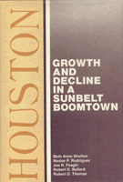

<body bgcolor="#FFFFFF" text="#000000" link="#0000FF" vlink="#CC0000" alink="#CC0000"><center><hr width="350" size="1" align="center" noshade>Analyzing Houston's patterns of economic growth and decline from 1900 to the present<hr width="350" size="1" align="center" noshade><p><a href="https://cdcshoppingcart.uchicago.edu/Cart/ChicagoBook.aspx?ISBN=9780877226079&&PRESS=temple" target="_top">Buy this book!</a> | <a href="https://cdcshoppingcart.uchicago.edu/Cart/Cart.aspx?PRESS=temple" target="_top">View Cart</a> | <a href="https://cdcshoppingcart.uchicago.edu/Cart/Cart.aspx?PRESS=temple" target="_top">Check Out</a></p><p></p></center><!--none//--><h1>Houston</h1>
<H2>Growth and Decline in a Sunbelt Boomtown</H2>
<h3>Beth Anne Shelton, Joe R. Feagin, Robert Bullard, Nestor Rodriguez and Robert D. Thomas</h3>
<P>cloth 0-87722-607-5 $32.95, Jun 89, <FONT COLOR=#990033>Out of Print</FONT>
<BR> 219 pp
</P><p>Journalists have described Houston as the largest boomtown, oil capital USA, the city that the depression missed, and capital of the Sunbelt. The recession in the mid-1980s together with the drop in oil prices and devaluation of both the Mexican peso and American dollar witnessed the "Golden Buckle of the Sunbelt" in unexpected decline. This book examines the historical context, demographic features, politics, minority communities, and economic characteristics of Houston from 1900 to the present, in order to analyze the city�s patterns of economic growth and decline.
<p>After a discussion of the emergence of the oil industry in the 1920s, the authors show how oil capital and government intervention affected the city�s growth. They examine the basic political shifts and alignments&#151including the Municipal Utility Districts in Houston�s extraterritorial jurisdiction&#151that enabled the city to become an industrial center in the world economy. Discussing the conflict between business and community groups, they describe how privately directed development and rapid growth affected different segments of the city�s population.
<p>The book examines in detail the effects of Houston�s economic expansion on the city�s two largest minority communities in terms of income, educational, and job inequality. The issue of undocumented immigrants from Mexico and Central America also is addressed. Unlike many cities where the major split is urban/suburban, in Houston there are myriad cleavages based on ethnicity, race, socioeconomic status, and neighborhood. The authors demonstrate how this diversity prevents consideration of Houston as a whole or unified city.
<p>For all the discussion of Sunbelt cities in recent decades, there have been few systematic book-length treatments of particular cities in the region. <I>Houston: Growth and Decline in a Sunbelt Boomtown</I> offers the first multi-dimensional analytical perspective on this celebrated Texas metropolis.
<BR>&nbsp;<H2>About the Author(s)</H2>
<P><b>Beth Anne Shelton</b> is Assistant Professor of Sociology at State University of New York at Buffalo.</P>
<P><b>Joe R. Feagin</b> is Professor of Sociology at the University of Texas at Austin.</P>
<P><b>Robert Bullard</b> is Associate Professor of Sociology at the University of California, Berkeley.</P>
<P><b>Nestor Rodriguez</b> is Assistant Professor of Sociology at the University of Houston.</P>
<P><b>Robert D. Thomas</b> is Professor of Political Science at the University of Houston.</P>
<BR><H2>Subject Categories</H2>
<p><A HREF="/tempress/sociology.html" TARGET="_top">Sociology</a>
</p>
<BR><h2 class="inpageheading">In the series</H2>
<P><I><a href="http://www.temple.edu/tempress/cities.html" onMouseOver="window.status='Click for other books in this series!'; return true;" onMouseOut="window.status=''; return true;" target="_top">Comparative American Cities</a></i>, edited by Joe T. Darden.
</p><p>No longer active.</p>
<p align="center"><a href="https://cdcshoppingcart.uchicago.edu/Cart/ChicagoBook.aspx?ISBN=9780877226079&&PRESS=temple" target="_top">Buy this book!</a> | <a href="https://cdcshoppingcart.uchicago.edu/Cart/Cart.aspx?PRESS=temple" target="_top">View Cart</a> | <a href="https://cdcshoppingcart.uchicago.edu/Cart/Cart.aspx?PRESS=temple" target="_top">Check Out</a></p><p><font face="Arial" size="1"><a href="copyright.html" onMouseOver="window.status='Web Copyright Policy';return true;" onMouseOut="window.status=''" title="Web Copyright Policy">&copy;</a> 2015 <a href="http://www.temple.edu" target="new" onMouseOver="window.status='Link to Temple University home page';return true;" onMouseOut="window.status=''" title="Link to Temple University home page">Temple University</a>. All Rights Reserved. http://www.temple.edu/tempress/titles/514_reg.html</font></p>